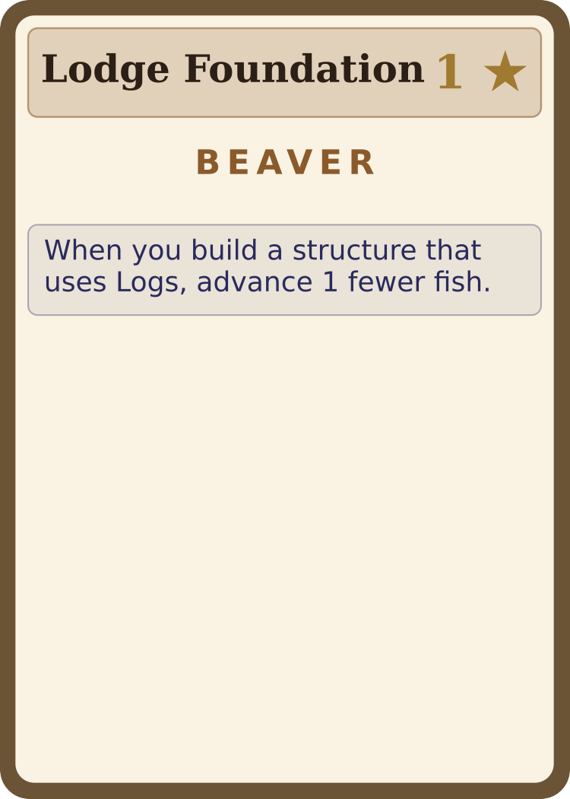
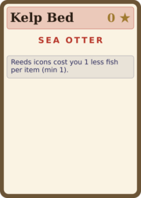
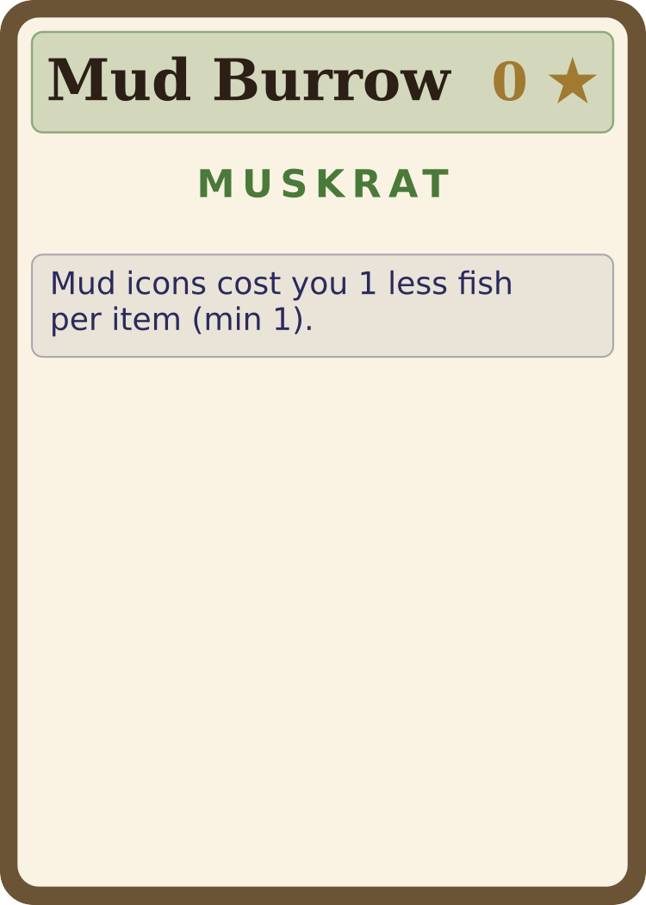
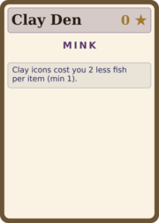

Strategy Guide
Read a shifting river. Win only the bids that matter.
Spend tempo like a miser, and outbid like a baron
on the one structure that completes your engine.
2–4 Players
30–60 Minutes
Ages 10+
Designed by Don Schwarz
Left Field Games
Play in your browser
leftfield.games/games/river-bankers
What Things Are Worth
This guide assumes you know the rules. It won't re-teach the turn structure — it teaches how to
win: how to read what materials are worth at your table, when to commit to your species,
and how to spend tempo so the river hands you bargains instead of bills.
River Bankers has no price tags. Open the box and you will not find a single number that tells you
what a card is "worth." A pile of logs drifting at the head of the river is nearly free; the same
pile two auctions later, washed downstream, costs more than double. A clay seep nobody else needs
is a steal; the one structure three players all want is a knife-fight. Value here is never
printed — it is set, in the moment, by where a card sits and by how badly the animals around the
table want it.
That is the whole game, and it is the lever every strong play pulls. You are not buying materials
at a fixed shop. You are reading a market that moves every turn, deciding what you are
willing to make things cost, and — just as often — quietly letting a rival overpay for something
you were happy to let go.
The three ways value moves
| Lever | How value shifts | What it means for you |
|---|
| Position — the shifting market |
A card's per-item price is its slot. Headwaters is 1🐟/item;
the river climbs 2 → 3 → 4 → 5🐟 as a card drifts downstream.
Every auction that leaves icons uncovered pushes the card one slot deeper and one fish dearer. |
The same material gets steadily more expensive the longer it sits. Buy upstream when it's
cheap — or let a card you don't need ripen into someone else's overpriced problem. |
| The auction — contested value |
Bids are sealed and simultaneous. Demand from the other players is what actually
sets the clearing price: an uncontested card costs the minimum, a card three of you want jams
and burns fish for everyone. |
You decide what to make things cost. Drive a rival's price up by contesting; or bluff a
minimum bid and scavenge the leftovers nobody fought for. |
| Workers — held inventory |
A worker you win sits on its card as your stock until you spend it on a build. You
are never forced to cash in. |
Hold a commodity until the structure that needs it is in your hand, then complete your engine
in one satisfying move — the windfall is the timing. |
The one currency that matters
Fish are not money — they are
time. Every fish you spend pushes your pawn forward,
and the pawn
farthest back always acts next. So the real question on every purchase isn't
"can I afford it?" (the track is effectively unbounded — you can always afford it). It's
"
is this worth the turns it costs me?" A 4-worker haul at River 2 buries you 8
spaces back and hands several turns to everyone else. Spend tempo like it's the scarcest thing at
the table, because it is.
Reading the market: what each material is worth
Every material is equally available — the deck carries the same four cards (4, 5, 7, 8
icons) for all six. What differs is demand: how many structures call for it, how
much VP it pays per unit, and whether any species gets a discount on it. That mix decides whether a
material is a safe staple or a feast-or-famine specialty.
| Material | Role | How contested | VP per unit | Species discount |
|---|
| Logs | Staple | Highest | Lowest | −1 (Beaver, Lodge Foundation) |
| Stones | Staple | High | Low | none |
| Mud | Workhorse | Middle | Middle | −1 (Muskrat, Mud Burrow) |
| Reeds | Workhorse | Middle | Middle | −1 (Otter, Kelp Bed) |
| Clay | Specialist | Lowest | Highest | −2 (Mink, Clay Den) |
| Vines | Specialist | Low | Middle | none |
Logs & Stones — the staples
These show up in the most structures and pay the least per unit. They are never a wrong buy and
rarely a great one — you'll move them constantly. Because everyone wants them, they're also the
materials most likely to jam. Don't get into a four-worker shoving match over logs
when a quieter material would finish the same structure cheaper.
Clay — the specialist that pays
Clay is the contrarian's darling. Fewest structures want it, so it's the least contested
material at the table — you'll routinely take it uncontested at the Headwaters rate. Yet it pays the
most VP per unit, and the Mink's Clay Den gives the single biggest discount in the
game (−2). Less competition → cheaper to win → and it pays more when you cash it in.
If clay structures are flowing into your hand, leaning clay is one of the most efficient lines in
the game.
Why "less wanted" can mean "more valuable"
This is the whole game in one material. Clay's
list price (icons) is identical
to every other material's — but its
real price is set by demand, and demand is low. The
card nobody else bids on is the card you win for one fish an icon. Scarcity of
competition,
not scarcity of supply, is where the bargains live.
Vines — the trap specialist
Vines look like Clay's twin — another low-demand specialty — but they're the one material to be
wary of committing to. There's no species discount on vines, and a large share of
the demand for them is locked in structures that score 0 VP on their own (engine
and end-game cards like Vine Ladder and Vine Trellis). Take vines to feed a specific card you
already hold, not as a general stockpile. A pile of unspent vines is the likeliest material to
end the game doing nothing.
Mud & Reeds — the flexible middle
Middle demand, middle payoff, and each carries a −1 species discount (Muskrat on mud, Otter on
reeds). These are your flex picks: contested enough to matter, cheap enough to win, and they keep
your options open while you wait to see which engine your hand wants to build.
Rule of thumb
Build with
staples (logs, stones) when you just need to get a structure down and
keep tempo. Reach for
Clay when you want maximum VP for minimum fish and the table
isn't fighting you for it. Touch
Vines only with a card in hand that pays you for
them.
Two players: the Bramble Shoal wild
At 2 players the deck swaps Rocky Shoal (Stones ×5) and Trailing Vine (Vines ×5) for a single
shared wildcard,
Bramble Shoal (Stones/Vines ×5) — the only 2P deck change. It
pulls double duty: a staple-priced source of Stones
and a flexible source of Vines on one
card, so the two of you are more likely to want it at the same time. That makes it the card most
worth contesting in the midgame — winning it can cover a staple structure and feed a vine engine in
one auction, while letting it drift hands your opponent both. Treat Bramble Shoal as a genuine
fight card rather than a quiet niche pickup, and remember its leftover workers can pair as
either Stones or Vines when you score end-game pairs.
Your species: commit or stay nimble
In the asymmetric game each player drafts one of three starter structures, built
for free from turn 1. Every species' three-card pool is the same shape: one
material-bias card (the ★) that discounts your signature material, and two
tactical cards that trade that discount for a sharper tool. The choice is the
guide's central fork: do you commit to a material specialty, or stay flexible?
| Species | Bias material | ★ Bias starter | Two tactical starters |
|---|
| Beaver | Logs | Lodge Foundation | Tail Slap · Beaver Cache |
| River Otter | Reeds | Kelp Bed | Rolling Float · Stone Tool |
| Muskrat | Mud | Mud Burrow | Channel Clearer · Marsh Lookout |
| Mink | Clay | Clay Den | Quick Strike · Snare Set |




The four ★ material-bias starters — a standing discount on your signature material.
When to take the ★ bias card
Take the bias starter when you want a standing discount you'll use all game. It
quietly lowers the per-item cost of your material on every auction, which compounds: a Mink with
Clay Den is winning the cheapest, highest-paying material in the game at a further −2. The bias
cards mostly print little or no VP of their own (Kelp Bed, Mud Burrow, and Clay Den print
0★; Lodge Foundation just 1★) — you pick
them for the engine, not for points. Commit early: a discount only pays off if you actually
steer your builds toward that material.
When to take a tactical card instead
The tactical starters give up the discount for a one-shot or repeatable edge — extra reach in an
auction, a hand-cycling boost, a tempo swing. Take one when your opening hand doesn't point at your
bias material, or when you'd rather stay flexible and read the table before committing. But choose
carefully: not every tactical card is the upgrade it looks like.
Watch out — Quick Strike
The Mink's
Quick Strike — declare your bid last on auctions
you trigger —
is a perfectly good card; on raw value it holds its own with Clay Den.
The trap isn't the
card, it's the playstyle it tempts. Because the ability only fires on auctions you
initiate, players bend their whole game around triggering auction after auction and lingering at the
back of the fish track to keep firing it — and that single-minded plan loses (see the next page).
Take Quick Strike for the bid-timing edge, then
play your normal game; don't
reshape your strategy around the card.
Strong pick — Stone Tool
At the other extreme, the Otter's
Stone Tool gives a real edge in auctions —
strong enough that it was reined in to fire only
once per game. When you draft it, save
that one use for an auction that genuinely decides a structure, not a routine grab.
Across thousands of games the species land within a few percent of each other — there is no
"best animal." Beaver is a touch forgiving (logs are everywhere, so its discount is the easiest to
use), and the rest are a wash. Your draft and your reads matter far more than your color.
First game? Play symmetric.
Skipping the starter draft (nobody builds at setup) is the cleaner way to learn. All the
value-and-tempo tension is already there without asymmetry. Layer the species starters in once the
auction rhythm feels natural.
What to build: structures by species
Your bias material makes one thing cheap — so build the structures that use it, and aim
at the card that pays you for going wide in it. Five "engine" structures each score
+2★ at end of game per built structure of yours that uses their
material (and fire a small bonus every time you build with it): Stone Causeway
(stones), Reed Walkway (reeds), Burrow Network (mud), Clay Vault (clay),
and Vine Trellis (vines). Commit to your material early, then make every build feed its engine.
Four of the five material engines — each pays +2★ per built structure of yours in its material.
| Species | Lean into | Signature builds | Engine & killer combo |
|---|
| Beaver |
Logs |
Royal Lodge, Lookout Tree, Spillway, Wood Pile |
No "log-count" engine — instead a tempo engine. Lodge Foundation +
Log Flume makes builds cost almost no fish, so you build more often and keep the
chair. Spend cheap logs on the priciest high-VP cards (Royal Lodge's extra turn chains
straight into a second build). |
| River Otter |
Reeds |
Reed Bed, Cattail Marsh, Granary, Cache Burrow |
Reed Walkway. Kelp Bed + Reed Bed stacks two reed
discounts; Cattail Marsh makes each reed worker count double — so you flood
a wide reed tableau cheaply and Reed Walkway scores all of it. |
| Muskrat |
Mud |
Mud Levee, Flush Channel, Streambank Hollow, Floodgate |
Burrow Network. Mud Burrow's discount feeds a wide mud tableau;
Streambank Hollow pays you tempo for the recall-heavy mud game. Floodgate
(mud + clay) is a strong splash into Mink's material. |
| Mink |
Clay |
Charcoal Pit, Floodgate, Trophy Lodge, Hidden Cache |
Clay Vault. Clay Den (−2) + Charcoal Pit lets a dirt-cheap
clay worker stand in for any material you're short on, once per build. Mink is also best placed for
the Trophy Lodge meta-engine (clay-heavy, and it scores your ?-VP cards). |
Combos worth knowing (any species)
- Specialize or diversify — not both. The five material engines reward
many structures of one material; Hidden Cache and Cattail
Patch reward many distinct materials. These pull in opposite directions — pick a
lane by mid-game and stop fighting yourself.
- Vines: highest ceiling, no discount. Vines is the only material with
two engines — Vine Trellis (+2) and Vine Ladder (+4 per vine structure,
max +12), the biggest go-wide payoff in the deck. But no species discounts vines, so it's
a contrarian play: pursue it only if vine structures are flowing and the table is leaving them cheap.
- Trophy Lodge meta. Every ?-VP card you control (Heron
Watch, Pier, Hidden Cache, Cattail Patch, Vine Ladder, Trophy Lodge itself) feeds Trophy Lodge for
+3★ each. Collect the engine/scorer cards and cap them with it.
- Reset loop. Springwater Pool re-arms all your spent
once-per-game cards (Spy Mound, Floodgate, Wood Pile, Tribute Stone, Tow Line…); Spring Cascade
re-arms one. Build a once-per-game toolkit, then fire it twice.
Bidding & the fish-track: spending tempo
Auctions are where value is actually set, and the fish track is the price you pay to set it. Master
the relationship between the two and you've mastered the game.
Keep the chair
The farthest-back pawn acts next — and keeps acting until someone else falls behind it. That means
cheap turns let you chain. A single-worker grab at River 1 nudges you forward only
2🐟 and you'll very likely still be lowest, so you go again. A greedy
four-worker haul buries you and gifts the table a lap of turns. The strongest rhythm is often a
string of small, cheap, decisive actions that keep returning the chair to you — not one big
splashy buy.
Pay-for-bid keeps everyone honest
Every worker you bid costs fish whether or not it wins an icon. So an over-aggressive bid
doesn't just risk losing — it burns tempo even when it loses. This cuts both ways:
- Don't overbid to "be safe." If a card has 5 icons and you bid 5 against a
rival's 4, the jam still charges you for all 5 workers while you take only a couple. You paid full
freight for materials that bounced back to your supply.
- Make rivals pay. When you can tell an opponent needs a card, a token
contesting bid forces them to bid high to clinch it — and the fish they spend is tempo you just
cost them, even if you win nothing.
Example — driving up a rival's price
The Mink clearly needs 3 clay to finish a structure on a 4-icon
card at River 1.
You don't need clay at all, but you bid
2 anyway. Now the Mink must bid the full 4 to be sure of 3 after the overbid — and
pays
4 × 2🐟 = 8🐟 for the privilege, eight spaces of tempo. You spent
4🐟 to cost them double. Sometimes the point of a bid isn't what you win — it's
what you make the table pay.
The bluffed zero (and the minimum trigger)
You can trigger an auction and commit the bare minimum — one worker — hoping rivals stay out and you
scoop uncovered icons cheap, or that a jam hands you leftovers. Played well, the
minimum-commitment trigger is how you keep tempo low while still pulling materials.
Don't reflexively pile on workers; the table that bids conservatively and scavenges efficiently ends
the game having traveled far less of the track — and in a tiebreak, the pawn farther back wins.
Trap — "staying back to act sooner"
It's tempting to deliberately hang at the back of the track to soak up extra turns. But turns are
only worth what you
do with them. A player who lingers at the rear taking tiny actions,
without converting them into built structures, simply takes a lot of cheap turns and scores
nothing — it's how a player who builds everything around Quick Strike ends up last. Tempo is a means, not
an end.
Cash your turns into structures.
Buy upstream; let dead cards drift
A card is cheapest the instant it enters the river and gets dearer with every auction that leaves it
uncovered. If you know you want a material, take it early — Headwaters at
1🐟/item or River 1 at 2🐟 — rather than letting
it drift to the 4–5🐟 back slots. Conversely, a card you don't
need is a weapon: leave it drifting, and a rival who needs it later pays the inflated downstream
price. You never have to be the one who pays to move it along.
Holding for the windfall
Winning a worker doesn't force you to use it. A worker sits on its card as your private stock —
there until you spend it on a build or call it home. That patience is a strategy in itself.
- Acquire toward a known structure. The cleanest engines win the materials first
and slap the structure down the moment it's affordable — ideally a build that fires several of
your passive "when you build with X" effects at once for a chain of free value.
- Recall is free. Just before any auction you may pull your own workers back from
river cards for nothing, dropping a blank behind them. Stage your workers where they threaten,
then recall and redeploy them into the auction that actually matters.
- Don't strand inventory. Materials still sitting on cards at game end score only
1★ per matched pair (singletons score nothing). Held stock is potential,
not points — convert it before the finish line.
Aim at the big end-game scorers
The fattest point swings live in the variable-VP "engine" structures — the material walkways and
ladders, Hidden Cache, Heron Watch, Cattail Patch — which can each pay far more than a printed
number if you've built toward them. They print little or nothing up front, so rivals undervalue
them; commit to one early and feed it all game.
Four end-game scorers that reward a player who quietly built toward them.
Racing the finish line
The game ends when pawns reach the finish line — 90 fish, the same at every player count
(on the second lap). A bigger table mines out a bigger board, but the extra workers carry every pawn
to the line at about the same depth, so it ends by pawns crossing rather than the board running dry.
Two things flip in the final stretch:
- Don't overshoot — and get there first. The instant your action carries you to or
past the line you retire, and the tiebreaker rewards the pawn that ends farther back.
Crossing on a small action and landing just past the line beats lunging across on a big one, so plan
your last few buys to finish lean. And because no two pawns share a space — land
where someone's already retired and you slide forward to the next open spot — the low finish spots
go to whoever claims them first. If you're angling for a tiebreak edge, time your crossing to grab a
low space before a rival parks there.
- One last build for everyone. After all players retire, each gets a single final
build with the workers they're holding. Don't end the game with materials stranded on cards if a
structure in hand could turn them into points — that last build is free VP you've already paid for.
The deck running dry doesn't end the game — but it speeds the clock
Even after the material deck empties, you keep auctioning the cards still on the river and Headwaters
until pawns reach the line. Tempo, not the deck, is the clock — so the same "spend turns wisely"
discipline runs right to the end. One twist:
once the deck is empty, every turn drifts your
pawn an extra +1 fish, so the finish line rushes up fast. Bank the builds you can still afford
before the drift carries you across — and don't count on many more turns once the Headwaters can't refill.
Strategy at a glance
Read value
- Price = position. Buy upstream cheap; let cards you don't need drift dear.
- Demand sets the real price, not the icon count. The card nobody wants is your bargain.
- Clay: least contested, pays the most — lean it when it flows.
- Vines: only with a card in hand that pays for them.
- Logs & stones: reliable, but the likeliest to jam.
Spend tempo
- Fish are turns. Cheap actions keep the chair; big hauls hand it away.
- You pay for every worker you bid, win or lose — don't overbid to feel safe.
- A token bid can make a rival overpay; the cost you impose can beat the prize you win.
- Bluff the minimum trigger and scavenge leftovers.
- Staying back only helps if you cash the turns into structures.
Pick your species
- ★ bias card = standing discount; commit your builds to that material.
- Bias cards score ~0 VP — draft them for the engine, not points.
- Feed your material's engine (Causeway/Walkway/Network/Vault/Trellis); specialize or diversify, not both.
- Tactical card = flexibility when your hand doesn't point at your material.
- Mink: Clay Den and Quick Strike are both fine — just don't bend your game around staying back to fire Quick Strike.
- Otter: save Stone Tool's one use for an auction that decides a structure.
Close it out
- Build toward a big variable-VP scorer early; feed it all game.
- Convert held materials before the end — pairs score 1★, singletons 0★.
- Cross the line lean; the farther-back pawn wins ties.
- Use your free final build to empty your stock into points.